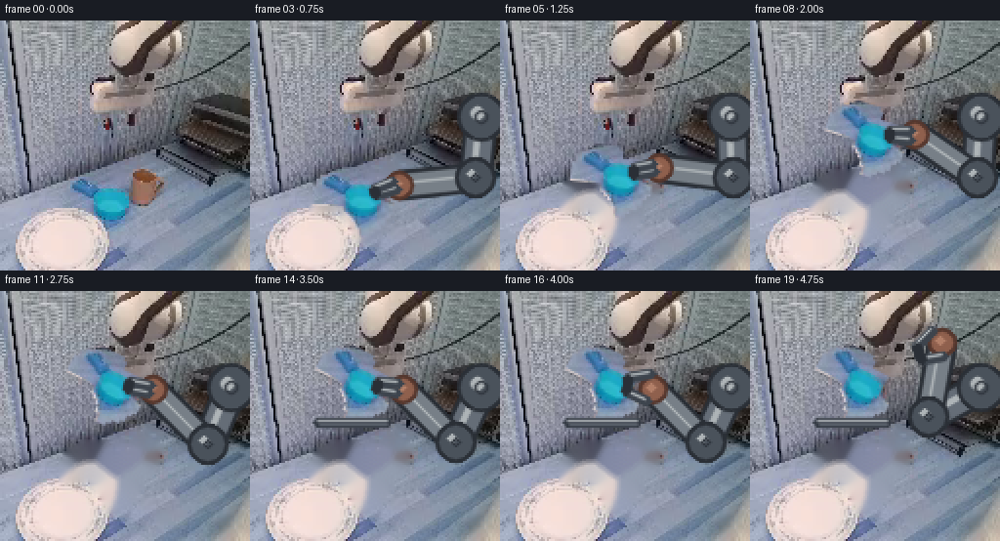
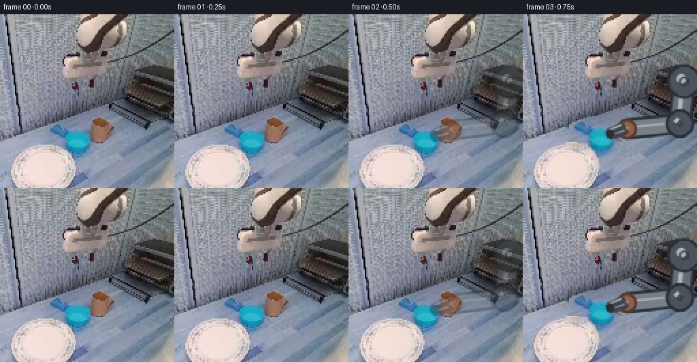
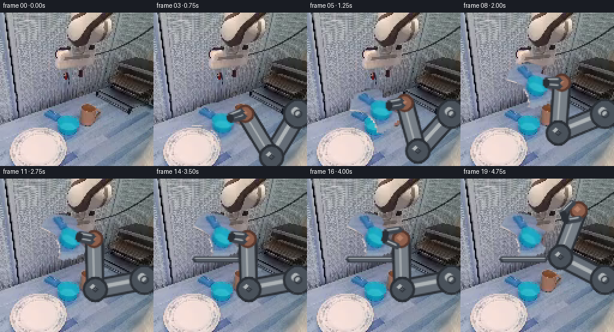
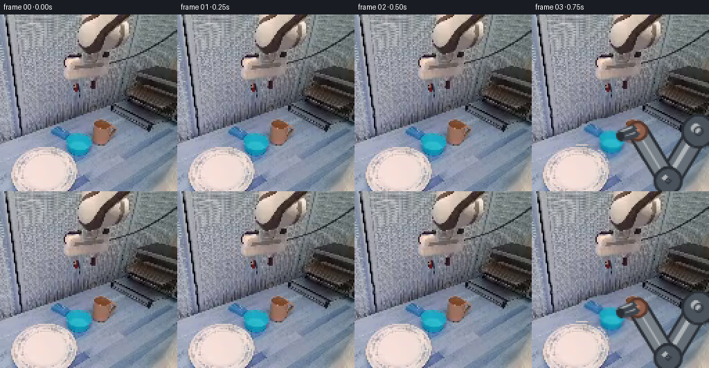

CODING AGENTS AS PIXEL WORLD MODELS
traex/GPT-5.6-Sol · common50_0044
点击播放 · 原生 RGB 像素
逐轮保存的候选
回放视频、检查图与代码变化。
每份候选均可单独播放。实际图片检查记录在下方工具轨迹中。
候选 01播放与检查图
点击播放 · 原生 RGB 像素


展开代码变化
--- 上一保存版本
+++ 本次保存版本
@@ -0,0 +1,283 @@
+from pathlib import Path
+import math
+import cv2
+import numpy as np
+from PIL import Image
+import artifact_io
+
+CASE_DIR = Path(__file__).resolve().parent
+
+
+def smoothstep(x):
+ x = float(np.clip(x, 0.0, 1.0))
+ return x * x * (3.0 - 2.0 * x)
+
+
+def largest_component_with_point(mask, point):
+ """Return the connected component containing point, with nearest fallback."""
+ count, labels, stats, centers = cv2.connectedComponentsWithStats(mask.astype(np.uint8), 8)
+ x, y = point
+ label = int(labels[y, x])
+ if label == 0:
+ valid = np.arange(1, count)
+ if len(valid) == 0:
+ return np.zeros_like(mask, dtype=np.uint8)
+ d = ((centers[valid] - np.array([x, y])) ** 2).sum(axis=1)
+ label = int(valid[np.argmin(d)])
+ return (labels == label).astype(np.uint8)
+
+
+def alpha_over(dst, src, alpha):
+ a = alpha.astype(np.float32)
+ if a.ndim == 2:
+ a = a[..., None]
+ if a.max() > 1.0:
+ a = a / 255.0
+ return np.clip(src.astype(np.float32) * a + dst.astype(np.float32) * (1.0 - a), 0, 255).astype(np.uint8)
+
+
+def transform_layer(rgb, alpha, center, new_center, angle_deg):
+ """Rigidly rotate and translate a full-canvas sprite."""
+ h, w = alpha.shape
+ M = cv2.getRotationMatrix2D((float(center[0]), float(center[1])), float(angle_deg), 1.0)
+ M[0, 2] += float(new_center[0] - center[0])
+ M[1, 2] += float(new_center[1] - center[1])
+ wrgb = cv2.warpAffine(rgb, M, (w, h), flags=cv2.INTER_LINEAR,
+ borderMode=cv2.BORDER_CONSTANT, borderValue=(0, 0, 0))
+ wa = cv2.warpAffine(alpha, M, (w, h), flags=cv2.INTER_LINEAR,
+ borderMode=cv2.BORDER_CONSTANT, borderValue=0)
+ return wrgb, wa
+
+
+def draw_capsule(img, a, b, width, outline, fill, highlight=None):
+ a = tuple(np.rint(a).astype(int)); b = tuple(np.rint(b).astype(int))
+ cv2.line(img, a, b, outline, width + 4, cv2.LINE_AA)
+ cv2.line(img, a, b, fill, width, cv2.LINE_AA)
+ if highlight is not None:
+ # A narrow upper-left reflection keeps the links metallic.
+ aa = (a[0] - 1, a[1] - 1); bb = (b[0] - 1, b[1] - 1)
+ cv2.line(img, aa, bb, highlight, max(1, width // 5), cv2.LINE_AA)
+
+
+def solve_elbow(shoulder, wrist, l1=31.0, l2=39.0):
+ """Stable inverse kinematics for a rigid planar two-link mechanism."""
+ s = np.asarray(shoulder, np.float64)
+ w = np.asarray(wrist, np.float64)
+ v = w - s
+ d = float(np.linalg.norm(v))
+ # Endpoints in this animation stay reachable; clipping guards roundoff.
+ d = np.clip(d, abs(l1 - l2) + 0.01, l1 + l2 - 0.01)
+ u = v / max(np.linalg.norm(v), 1e-6)
+ a = (l1*l1 - l2*l2 + d*d) / (2.0*d)
+ h = math.sqrt(max(0.0, l1*l1 - a*a))
+ p = s + a*u
+ perp = np.array([-u[1], u[0]])
+ # This branch keeps the elbow below/right initially and varies continuously.
+ return p - h*perp
+
+
+def draw_robot(frame, shoulder, wrist, cup_center, openness, opacity=1.0):
+ """Draw fixed-length metal links, rotary joints, and a stable parallel gripper."""
+ layer = frame.copy()
+ elbow = solve_elbow(shoulder, wrist)
+
+ dark = (42, 47, 54)
+ edge = (61, 68, 77)
+ metal1 = (101, 109, 119)
+ metal2 = (119, 127, 135)
+ shine = (174, 180, 183)
+ joint = (74, 82, 91)
+ red_dark = (86, 55, 45)
+ red = (143, 96, 77)
+ red_hi = (178, 127, 104)
+
+ draw_capsule(layer, shoulder, elbow, 11, dark, metal1, shine)
+ draw_capsule(layer, elbow, wrist, 9, dark, metal2, shine)
+
+ for p, radius in [(shoulder, 10), (elbow, 8)]:
+ q = tuple(np.rint(p).astype(int))
+ cv2.circle(layer, q, radius + 2, dark, -1, cv2.LINE_AA)
+ cv2.circle(layer, q, radius, joint, -1, cv2.LINE_AA)
+ cv2.circle(layer, (q[0]-2, q[1]-2), max(2, radius//3), shine, -1, cv2.LINE_AA)
+ cv2.circle(layer, q, max(2, radius//3), (48, 54, 62), 1, cv2.LINE_AA)
+
+ wr = np.asarray(wrist, np.float64)
+ cc = np.asarray(cup_center, np.float64)
+ toward = cc - wr
+ n = float(np.linalg.norm(toward))
+ if n < 1e-5:
+ toward = np.array([-1.0, 0.0]); n = 1.0
+ toward /= n
+ perp = np.array([-toward[1], toward[0]])
+
+ # Rigid red wrist block.
+ q = tuple(np.rint(wr).astype(int))
+ cv2.circle(layer, q, 7, red_dark, -1, cv2.LINE_AA)
+ cv2.circle(layer, q, 5, red, -1, cv2.LINE_AA)
+ cv2.circle(layer, (q[0]-1, q[1]-1), 2, red_hi, -1, cv2.LINE_AA)
+
+ # Symmetric fingers open only by joint rotation; finger lengths never change.
+ spread = 2.0 + 5.0*float(openness)
+ root_forward = 2.0
+ finger_len = 13.0
+ for sign in (-1.0, 1.0):
+ root = wr + toward*root_forward + perp*(sign*spread)
+ tip = wr + toward*finger_len + perp*(sign*(1.1 + 0.38*spread))
+ cv2.line(layer, tuple(np.rint(root).astype(int)), tuple(np.rint(tip).astype(int)),
+ edge, 4, cv2.LINE_AA)
+ cv2.line(layer, tuple(np.rint(root - np.array([1,1])).astype(int)),
+ tuple(np.rint(tip - np.array([1,1])).astype(int)), shine, 1, cv2.LINE_AA)
+ # Short inward jaw pad.
+ pad_end = tip - perp*(sign*3.0)
+ cv2.line(layer, tuple(np.rint(tip).astype(int)), tuple(np.rint(pad_end).astype(int)),
+ dark, 3, cv2.LINE_AA)
+
+ if opacity >= 0.999:
+ return layer
+ return cv2.addWeighted(layer, opacity, frame, 1.0-opacity, 0)
+
+
+def make_frames():
+ source = np.array(Image.open(CASE_DIR / 'first_frame.png').convert('RGB'), dtype=np.uint8)
+ if source.shape != (256, 256, 3):
+ raise ValueError(source.shape)
+
+ # The provided image is an exact 2x nearest-neighbor enlargement. Work in its
+ # native lattice, then enlarge once so generated edges retain the same style.
+ native = source[::2, ::2].copy()
+ assert np.array_equal(source, np.repeat(np.repeat(native, 2, 0), 2, 1))
+ h, w = native.shape[:2]
+ r, g, b = [native[..., i].astype(np.int16) for i in range(3)]
+
+ # Blue/cyan vessel: connected chromatic object centered near (52,93).
+ blue_candidate = (b-r > 22) & (g-r > 10) & (b > 95)
+ cup = largest_component_with_point(blue_candidate, (55, 94))
+ cup = cv2.morphologyEx(cup, cv2.MORPH_CLOSE, np.ones((3,3), np.uint8))
+ # Include one antialiased boundary pixel without swallowing the blue-gray floor.
+ cup = cv2.dilate(cup, np.ones((3,3), np.uint8), iterations=1)
+ cup_alpha = (cup * 255).astype(np.uint8)
+
+ ys, xs = np.where(cup > 0)
+ cup_center = np.array([xs.mean(), ys.mean()], dtype=np.float64)
+
+ # Existing warm-colored end effector adjacent to the vessel is removed from
+ # the static plate; the animated rigid wrist replaces it.
+ warm_candidate = (r-g > 23) & (r-b > 23) & (r > 88)
+ warm = largest_component_with_point(warm_candidate, (75, 84))
+ warm = cv2.dilate(cv2.morphologyEx(warm, cv2.MORPH_CLOSE,
+ np.ones((3,3), np.uint8)),
+ np.ones((3,3), np.uint8), iterations=1)
+
+ erase = np.maximum(cup, warm).astype(np.uint8)
+ erase = cv2.dilate(erase, np.ones((3,3), np.uint8), iterations=1)
+ # Telea reconstruction is local and deterministic; at this resolution it
+ # plausibly extends the work surface and rack tones exposed by the pickup.
+ background = cv2.inpaint(native, erase*255, 4, cv2.INPAINT_TELEA)
+
+ cup_rgb = native.copy()
+ shoulder = np.array([118.0, 49.0])
+ start_center = cup_center.copy()
+ start_wrist = np.array([75.0, 85.0])
+ grip_offset = start_wrist - start_center
+
+ # Compute a final rigid transform whose lowest vessel pixel meets the known
+ # metal shelf edge at native y=67.
+ final_angle = -27.0
+ probe_rgb, probe_a = transform_layer(cup_rgb, cup_alpha, cup_center,
+ np.array([54.0, 47.0]), final_angle)
+ py, px = np.where(probe_a > 28)
+ final_center = np.array([54.0, 47.0 + (67.0 - py.max())])
+
+ frames_native = []
+ for i in range(20):
+ if i <= 1:
+ # A short stable hold makes the pickup readable and keeps frame 00 exact.
+ frame = native.copy()
+ frames_native.append(frame)
+ continue
+ if i == 2:
+ # Contact/closure frame: retain all original pixels and add only jaws.
+ frame = native.copy()
+ frame = draw_robot(frame, shoulder, start_wrist, start_center,
+ openness=0.18, opacity=0.42)
+ frames_native.append(frame)
+ continue
+
+ # Carrying phase (3..12), then a controlled 2-frame seating motion.
+ if i <= 12:
+ q = smoothstep((i - 2) / 10.0)
+ # Quadratic arc: rise clear of the work surface before approaching shelf.
+ control = np.array([67.0, 61.0])
+ center = ((1-q)**2)*start_center + 2*(1-q)*q*control + (q*q)*final_center
+ angle = final_angle*q
+ carrying = True
+ openness = 0.08
+ elif i <= 14:
+ q = smoothstep((i - 12) / 2.0)
+ center = final_center + np.array([0.0, -1.5*(1.0-q)])
+ angle = final_angle
+ carrying = True
+ openness = 0.08
+ else:
+ center = final_center.copy()
+ angle = final_angle
+ carrying = False
+ openness = smoothstep((i - 14) / 2.0)
+
+ # Rigid wrist-to-vessel transform during grasp.
+ th = math.radians(angle)
+ rot = np.array([[math.cos(th), math.sin(th)],
+ [-math.sin(th), math.cos(th)]])
+ held_wrist = center + rot @ grip_offset
+
+ if carrying or i <= 16:
+ wrist = held_wrist
+ else:
+ rq = smoothstep((i - 16) / 3.0)
+ wrist = (1.0-rq)*held_wrist + rq*np.array([98.0, 26.0])
+
+ frame = background.copy()
+
+ # A soft moving contact shadow adds height cues without camera motion.
+ crgb, ca = transform_layer(cup_rgb, cup_alpha, cup_center, center, angle)
+ shadow_a = cv2.GaussianBlur(ca, (0,0), 2.0)
+ shadow_a = cv2.warpAffine(shadow_a, np.float32([[1,0,2],[0,1,2]]),
+ (w,h), flags=cv2.INTER_LINEAR,
+ borderMode=cv2.BORDER_CONSTANT, borderValue=0)
+ shadow_strength = 0.10 if i < 12 else 0.16
+ shadow_rgb = np.zeros_like(frame) + np.array([38, 43, 49], dtype=np.uint8)
+ frame = alpha_over(frame, shadow_rgb,
+ (shadow_a.astype(np.float32)/255.0)*shadow_strength)
+
+ frame = draw_robot(frame, shoulder, wrist, center, openness=openness)
+ frame = alpha_over(frame, crgb, ca)
+
+ # The wrist and jaws are foreground relative to the held vessel.
+ # Redraw only the compact terminal assembly by drawing the robot on a copy,
+ # then selecting a circular neighborhood around the wrist.
+ robot_top = draw_robot(frame.copy(), shoulder, wrist, center, openness=openness)
+ yy, xx = np.ogrid[:h, :w]
+ topmask = (((xx-wrist[0])**2 + (yy-wrist[1])**2) < 22**2).astype(np.uint8)*255
+ frame = alpha_over(frame, robot_top, topmask)
+
+ # Once seated, restore the rack's horizontal metal front lip over the base.
+ if i >= 13:
+ cv2.line(frame, (34,67), (70,67), (52,58,68), 3, cv2.LINE_AA)
+ cv2.line(frame, (34,66), (70,66), (164,169,174), 1, cv2.LINE_AA)
+ cv2.line(frame, (35,68), (70,68), (91,98,108), 1, cv2.LINE_AA)
+
+ frames_native.append(frame)
+
+ # Exact source frame is retained; all others use the same native pixel lattice.
+ frames = []
+ for i, fr in enumerate(frames_native):
+ if i == 0:
+ frames.append(source.copy())
+ else:
+ frames.append(np.repeat(np.repeat(fr, 2, axis=0), 2, axis=1))
+ return np.stack(frames).astype(np.uint8)
+
+
+if __name__ == '__main__':
+ result = make_frames()
+ artifact_io.save(result, CASE_DIR)
候选 02播放与检查图
点击播放 · 原生 RGB 像素


展开代码变化
--- 上一保存版本
+++ 本次保存版本
@@ -59,7 +59,7 @@
cv2.line(img, aa, bb, highlight, max(1, width // 5), cv2.LINE_AA)
-def solve_elbow(shoulder, wrist, l1=31.0, l2=39.0):
+def solve_elbow(shoulder, wrist, l1=42.0, l2=42.0):
"""Stable inverse kinematics for a rigid planar two-link mechanism."""
s = np.asarray(shoulder, np.float64)
w = np.asarray(wrist, np.float64)
@@ -168,14 +168,25 @@
np.ones((3,3), np.uint8)),
np.ones((3,3), np.uint8), iterations=1)
- erase = np.maximum(cup, warm).astype(np.uint8)
+ # The source arm runs from the red wrist into the right-hand mounting point.
+ # Remove its two broad metal links as one articulated foreground object; this
+ # prevents a stationary "ghost arm" after the mechanism begins to move.
+ old_arm = np.zeros((h, w), np.uint8)
+ cv2.line(old_arm, (75,85), (96,63), 15, 255, cv2.LINE_AA)
+ cv2.line(old_arm, (96,63), (120,84), 15, 255, cv2.LINE_AA)
+ cv2.circle(old_arm, (96,63), 10, 255, -1, cv2.LINE_AA)
+ cv2.circle(old_arm, (120,84), 11, 255, -1, cv2.LINE_AA)
+
+ erase = np.maximum.reduce([cup, warm, (old_arm > 0).astype(np.uint8)])
erase = cv2.dilate(erase, np.ones((3,3), np.uint8), iterations=1)
# Telea reconstruction is local and deterministic; at this resolution it
# plausibly extends the work surface and rack tones exposed by the pickup.
background = cv2.inpaint(native, erase*255, 4, cv2.INPAINT_TELEA)
cup_rgb = native.copy()
- shoulder = np.array([118.0, 49.0])
+ # Fixed right-side shoulder mount, matching the perspective and original
+ # arm attachment. Link lengths stay exactly 42 native pixels in every frame.
+ shoulder = np.array([120.0, 84.0])
start_center = cup_center.copy()
start_wrist = np.array([75.0, 85.0])
grip_offset = start_wrist - start_center
@@ -190,19 +201,11 @@
frames_native = []
for i in range(20):
- if i <= 1:
+ if i <= 2:
# A short stable hold makes the pickup readable and keeps frame 00 exact.
frame = native.copy()
frames_native.append(frame)
continue
- if i == 2:
- # Contact/closure frame: retain all original pixels and add only jaws.
- frame = native.copy()
- frame = draw_robot(frame, shoulder, start_wrist, start_center,
- openness=0.18, opacity=0.42)
- frames_native.append(frame)
- continue
-
# Carrying phase (3..12), then a controlled 2-frame seating motion.
if i <= 12:
q = smoothstep((i - 2) / 10.0)
可观测工具轨迹
实际执行的命令与返回图片。
命令 1exit 0
/bin/bash -lc "cat prompt.txt && printf '\\n--- GENERATION_RULES.md ---\\n' && cat GENERATION_RULES.md"
命令 2exit 0
/bin/bash -lc "find . -maxdepth 2 -type f -printf '%P\\n' | sort && printf '\\n--- tools ---\\n' && command -v ffmpeg || true && command -v python3 || true"
命令 3exit 0
/bin/bash -lc "python3 - <<'PY'
from PIL import Image
im=Image.open('first_frame.png')
print(im.mode, im.size)
print('extrema', im.getextrema())
PY"命令 4exit 0
/bin/bash -lc "cat task_spec.json && printf '\\n--- artifact_io.py ---\\n' && sed -n '1,240p' artifact_io.py"
命令 5exit 0
/bin/bash -lc "python3 - <<'PY'
from PIL import Image
import numpy as np
im=np.array(Image.open('first_frame.png')).astype(int)
# dominant-color/chroma bounding boxes and per-grid means
masks={
'blue':(im[:,:,2]>im[:,:,0]*1.25)&(im[:,:,2]>im[:,:,1]*1.12)&(im[:,:,2]>55),
'bright_blue':(im[:,:,2]>110)&(im[:,:,2]>im[:,:,0]+25)&(im[:,:,2]>im[:,:,1]+15),
'red':(im[:,:,0]>im[:,:,1]*1.35)&(im[:,:,0]>im[:,:,2]*1.3)&(im[:,:,0]>70),
'green':(im[:,:,1]>im[:,:,0]*1.25)&(im[:,:,1]>im[:,:,2]*1.1)&(im[:,:,1]>60),
'bright':im.mean(2)>180,
'dark':im.mean(2)<35,
}
for n,m in masks.items():
ys,xs=np.where(m)
print(n, len(xs), ('bbox',xs.min(),ys.min(),xs.max(),ys.max()) if len(xs) else '')
# bins 16x16 count top
bins=[]
for y in range(0,256,16):
for x in range(0,256,16):
c=m[y:y+16,x:x+16].sum()
if c: bins.append((int(c),x,y))
print(' topbins',sorted(bins,reverse=True)[:16])
print('grid mean RGB 32px:')
for y in range(0,256,32):
print('y',y, [tuple(np.mean(im[y:y+32,x:x+32],axis=(0,1)).astype(int)) for x in range(0,256,32)])
PY"命令 6exit 0
/bin/bash -lc "python3 - <<'PY'
from PIL import Image
import numpy as np
im=np.array(Image.open('first_frame.png'))
# list frequent colors and selected channel profiles
u,c=np.unique(im.reshape(-1,3),axis=0,return_counts=True)
for i in np.argsort(c)[-25:][::-1]: print(c[i],u[i].tolist())
print('blue excess x profile')
b=(im[:,:,2].astype(int)-np.maximum(im[:,:,0],im[:,:,1]).astype(int)).clip(0)
print([(x,int(b[:,x:x+8].sum())) for x in range(0,256,8)])
print('blue excess y profile')
print([(y,int(b[y:y+8].sum())) for y in range(0,256,8)])
PY"命令 7exit 0
/bin/bash -lc "python3 - <<'PY'
from PIL import Image
import numpy as np
im=np.array(Image.open('first_frame.png'))
# Print coarse map based on strongest chromatic nature and luminance. 4x4 blocks ->64
chars=[]
for y in range(0,256,4):
line=''
for x in range(0,256,4):
a=im[y:y+4,x:x+4].mean((0,1)); r,g,b=a; mx=max(a); mn=min(a); lum=a.mean()
if mx-mn>35:
if b==mx and g-r>15: ch='C'
elif b==mx: ch='B'
elif r==mx: ch='R'
elif g==mx: ch='G'
else: ch='?'
else:
ch='@' if lum<40 else '#' if lum<70 else 'o' if lum<100 else '+' if lum<130 else '-' if lum<160 else '.' if lum<195 else ' '
line+=ch
print(line)
PY"命令 8exit 0
/bin/bash -lc "python3 - <<'PY'
from PIL import Image
import numpy as np
im=np.array(Image.open('first_frame.png')).astype(float)
# colors every 8 pixels around interesting bottom/middle region, format brightness + RGB winner
for y in range(80,240,8):
s=[]
for x in range(40,256,8):
a=im[y:y+8,x:x+8].mean((0,1));
dom='r' if a[0]>a[1]+15 and a[0]>a[2]+15 else 'b' if a[2]>a[0]+20 else 'c' if a[1]>a[0]+15 and a[2]>a[0]+15 else 'n'
s.append(f'{dom}{int(a.mean()/10):02d}')
print(f'{y:03}', ' '.join(s))
PY"命令 9exit 0
/bin/bash -lc "python3 - <<'PY'
try:
import cv2; print('cv2',cv2.__version__)
except Exception as e: print(e)
try:
import scipy; print('scipy',scipy.__version__)
except Exception as e: print(e)
PY
python3 - <<'PY'
from PIL import Image
import numpy as np
from scipy.ndimage import label
im=np.array(Image.open('first_frame.png')).astype(int)
B=im[:,:,2]; G=im[:,:,1]; R=im[:,:,0]
for name,m in [
('B-R>40',(B-R>40)),('B-R>60',(B-R>60)),('cyan',(B-R>50)&(G-R>35)&(B>100)),
('blue_sat',(B-np.minimum(R,G)>45)&(B>100)),
('red_sat',(R-G>30)&(R-B>30)),
('neutral_dark',(abs(R-G)<10)&(abs(G-B)<10)&(R<100))]:
print('\\n',name,'pixels',m.sum())
lab,n=label(m)
cc=[]
for k in range(1,n+1):
ys,xs=np.where(lab==k); s=len(xs)
if s>=5: cc.append((s,int(xs.min()),int(ys.min()),int(xs.max()),int(ys.max()),tuple(im[ys,xs].mean(0).astype(int))))
print(*sorted(cc,reverse=True)[:30],sep='\\n')
PY"命令 10exit 0
/bin/bash -lc "python3 - <<'PY'
import cv2,numpy as np
from PIL import Image
im=np.array(Image.open('first_frame.png'))[::4,::4]
Z=im.reshape(-1,3).astype(np.float32)
cv2.setRNGSeed(2)
_,lab,cen=cv2.kmeans(Z,16,None,(cv2.TERM_CRITERIA_EPS+cv2.TERM_CRITERIA_MAX_ITER,100,0.2),20,cv2.KMEANS_PP_CENTERS)
# sort by luminance but retain selected labels chars
order=np.argsort(cen.mean(1)); chars='@%#Oox*+=-:.bcRY' # low to hi arbitrary
# actually assign chars, chromatic centroids custom
print('centroids')
labmap={}
for rank,i in enumerate(order):
c=cen[i]; spread=c.max()-c.min();
if c[2]-c[0]>40 and c[1]-c[0]>25: ch='C' if c.mean()<150 else 'c'
elif c[0]-c[2]>30: ch='R' if c.mean()<150 else 'r'
else: ch='@#Oo+=-. '[min(rank,8)]
# resolve duplicate chars
if ch in labmap.values(): ch=str(rank%10)
labmap[i]=ch
print(i, ch, c.astype(int), 'count',int((lab==i).sum()))
L=lab.reshape(64,64)
print(' '+''.join(str(i//10) if i%10==0 else ' ' for i in range(64)))
print(' '+''.join(str(i%10) for i in range(64)))
for y,row in enumerate(L): print(f'{y:02d} '+''.join(labmap[i] for i in row))
PY"命令 11exit 0
/bin/bash -lc "python3 - <<'PY'
from PIL import Image
import numpy as np, cv2
im=np.array(Image.open('first_frame.png'))
a=im[::4,::4]
# Sobel edge and hue feature plus coordinates, threshold
v=cv2.cvtColor(a,cv2.COLOR_RGB2GRAY)
e=cv2.Canny(v,25,60)
print(' '+''.join(str(i//10) if i%10==0 else ' ' for i in range(64)))
print(' '+''.join(str(i%10) for i in range(64)))
for y in range(64):
print(f'{y:02} '+''.join('#' if e[y,x] else ' ' for x in range(64)))
PY"命令 12exit 0
/bin/bash -lc "python3 - <<'PY'
from PIL import Image
import numpy as np
im=np.array(Image.open('first_frame.png')).astype(int)
R,G,B=im[:,:,0],im[:,:,1],im[:,:,2]
for title,m in [
('cup strict',(B-R>60)&(G-R>45)&(B>130)),
('cup loose',(B-R>40)&(G-R>28)&(B>120)),
('red',(R-G>25)&(R-B>30)&(R>90)),
('metal hi',(abs(R-G)<15)&(abs(G-B)<15)&(R>120)&(R<220)),
('dark',(R+G+B<150))]:
print('\\n'+title)
# 4x down max occupancy; crop scene relevant x=15..63,y=0..55
for yy in range(0,224,4):
line=''
for xx in range(40,256,4):
k=m[yy:yy+4,xx:xx+4].mean()
line += '#' if k>.6 else '+' if k>.2 else ' '
if '#' in line or '+' in line: print(f'{yy//4:02d} '+line)
PY"命令 13exit 0
/bin/bash -lc "python3 - <<'PY'
from PIL import Image
import numpy as np
im=np.array(Image.open('first_frame.png')).astype(int)
# print detailed 4x grid mean RGB for cup (x64:144, y148:224), 20x19, quantized custom
for y in range(148,224,4):
print(f'{y:03}:',end=' ')
for x in range(64,144,4):
a=im[y:y+4,x:x+4].mean((0,1)).astype(int)
print('%02x%02x%02x'%tuple((a//16).clip(0,15)),end=' ')
print()
PY"命令 14exit 0
/bin/bash -lc "python3 - <<'PY'
import cv2, numpy as np
from PIL import Image
im=np.array(Image.open('first_frame.png'))
# use SLIC? ximg unavailable. list high-sat hsv comps
hsv=cv2.cvtColor(im,cv2.COLOR_RGB2HSV)
for h0,h1 in [(80,115),(90,110),(0,15),(170,180)]:
m=((hsv[:,:,0]>=h0)&(hsv[:,:,0]<=h1)&(hsv[:,:,1]>70)).astype(np.uint8)
n,lab,stats,cen=cv2.connectedComponentsWithStats(m)
print(h0,h1, sorted([tuple(map(int,s)) for s in stats[1:] if s[4]>10],key=lambda x:x[4], reverse=True)[:10])
PY"命令 15exit 0
/bin/bash -lc "python3 - <<'PY'
from PIL import Image
import numpy as np
im=np.array(Image.open('first_frame.png')).astype(int);R,G,B=im.transpose(2,0,1)
for y in range(140,220,4):
print(y,end=': ')
for typ,m in [('L',(B-R>35)&(G-R>20)&(B>115)),('S',(B-R>55)&(G-R>38)&(B>130))]:
xs=np.where(m[y:y+4].any(0))[0]
# ranges intersect x50..155
xs=xs[(xs>=50)&(xs<=155)]
ranges=[]
if len(xs):
q=np.split(xs,np.where(np.diff(xs)>1)[0]+1); ranges=[(a[0],a[-1]) for a in q]
print(typ,ranges,end=' ')
print()
PY"命令 16exit 0
/bin/bash -lc "python3 - <<'PY'
import cv2, numpy as np
im=cv2.imread('first_frame.png')
g=cv2.cvtColor(im,cv2.COLOR_BGR2GRAY)
e=cv2.Canny(g,30,80)
lines=cv2.HoughLinesP(e,1,np.pi/180,threshold=25,minLineLength=25,maxLineGap=8)
ls=[]
for l in lines[:,0]:
x1,y1,x2,y2=map(int,l); length=np.hypot(x2-x1,y2-y1); angle=np.degrees(np.arctan2(y2-y1,x2-x1)); ls.append((round(length,1),round(angle,1),(x1,y1,x2,y2)))
print(*sorted(ls,reverse=True)[:80],sep='\\n')
PY"命令 17exit 0
/bin/bash -lc "python3 - <<'PY'
from PIL import Image
import numpy as np
im=np.array(Image.open('first_frame.png')).astype(int)
for y in range(144,224,4):
line=''
for x in range(60,144,4):
a=im[y:y+4,x:x+4].mean((0,1));r,g,b=a
if b-r>60 and g-r>38: ch='X'
elif b-r>35 and g-r>22: ch='x'
elif b-r>20 and g-r>10: ch='b'
elif r-g>25 and r-b>25: ch='R'
elif a.mean()<70:ch='#'
elif a.mean()<110:ch='o'
elif a.mean()<145:ch='+'
elif a.mean()<180:ch='.'
else:ch=' '
line+=ch
print(f'{y//4:02d} {line}')
print(' '+''.join(str((x//4)%10) for x in range(60,144,4)))
PY"命令 18exit 0
/bin/bash -lc "python3 - <<'PY'
import cv2,numpy as np
from PIL import Image
im=np.array(Image.open('first_frame.png')).astype(int)
r,g,b=[im[:,:,i] for i in range(3)]
m=((b-r>22)&(g-r>10)&(b>95)).astype(np.uint8)
# seed strict comp around target
n,lab,st,cen=cv2.connectedComponentsWithStats(m)
for i,s in enumerate(st):
x,y,w,h,area=s
if area>50 and x<150 and y>130: print(i,s,cen[i])
# target label at 110,185, then dilation + flood nearby?
k=lab[185,110]; o=(lab==k).astype(np.uint8)
print('label',k,'bbox',st[k], 'area',o.sum())
# 4x occupancy ascii
for yy in range(144,224,4):
line=''
for xx in range(56,148,4):
q=o[yy:yy+4,xx:xx+4].mean()
line+='#' if q>.5 else '+' if q else ' '
print(line)
PY"命令 19exit 0
/bin/bash -lc "python3 - <<'PY'
from PIL import Image
import numpy as np
im=np.array(Image.open('first_frame.png')).astype(int)
for y in range(0,200,4):
line=''
for x in range(104,184,4):
a=im[y:y+4,x:x+4].mean((0,1));r,g,b=a
if r-g>28 and r-b>25: ch='R'
elif b-r>35 and g-r>22:ch='C'
elif a.mean()<50:ch='@'
elif a.mean()<80:ch='#'
elif a.mean()<110:ch='o'
elif a.mean()<140:ch='+'
elif a.mean()<175:ch='.'
else:ch=' '
line+=ch
print(f'{y//4:02} {line}')
PY"命令 20exit 0
/bin/bash -lc "python3 - <<'PY'
from PIL import Image
import numpy as np
im=np.array(Image.open('first_frame.png'))
ref=np.repeat(np.repeat(im[::4,::4],4,0),4,1)
print('identical 4x', np.array_equal(im,ref), 'diff px',np.any(im"'!=ref,2).sum(),'"'max',abs(im.astype(int)-ref.astype(int)).max())
# run boundaries per rows and cols
for y in [0,1,2,3,4,100,160,200]: print(y,len(np.unique(im[y],axis=0)))
PY"命令 21exit 0
/bin/bash -lc "python3 - <<'PY'
from PIL import Image
import numpy as np
im=np.array(Image.open('first_frame.png'))[::4,::4]
# exact all 64 colors grid abbreviate by color categories but perhaps arrange unicode quadrants? output pixel RGB full for selected coordinates
for y in range(35,56):
print(y, [(x,im[y,x].tolist()) for x in range(12,44)])
PY"命令 22exit 0
/bin/bash -lc "python3 - <<'PY'
from PIL import Image
import numpy as np
im=np.array(Image.open('first_frame.png'))
# test repetition patterns and nearest source dimension candidates
for n in [2,4,8]:
ref=np.repeat(np.repeat(im[::n,::n],n,0),n,1)
print(n,np.array_equal(im,ref),np.any(im"'!=ref,2).sum())
PY'命令 23exit 0
/bin/bash -lc "python3 - <<'PY'
import cv2,numpy as np
from PIL import Image
im=np.array(Image.open('first_frame.png'))[::2,::2].astype(int);r,g,b=im.transpose(2,0,1)
m=((b-r>22)&(g-r>10)&(b>95)).astype(np.uint8)
n,l,s,c=cv2.connectedComponentsWithStats(m)
k=l[94,55]
o=(l==k).astype(np.uint8)
print('stats',s[k],c[k])
for y in range(72,114):
print(f'{y:03}', ''.join('#' if o[y,x] else ' ' for x in range(25,78)))
PY"命令 24exit 0
/bin/bash -lc "cat > generate.py <<'PY'
from pathlib import Path
import math
import cv2
import numpy as np
from PIL import Image
import artifact_io
CASE_DIR = Path(__file__).resolve().parent
def smoothstep(x):
x = float(np.clip(x, 0.0, 1.0))
return x * x * (3.0 - 2.0 * x)
def largest_component_with_point(mask, point):
\"\"\"Return the connected component containing point, with nearest fallback.\"\"\"
count, labels, stats, centers = cv2.connectedComponentsWithStats(mask.astype(np.uint8), 8)
x, y = point
label = int(labels[y, x])
if label == 0:
valid = np.arange(1, count)
if len(valid) == 0:
return np.zeros_like(mask, dtype=np.uint8)
d = ((centers[valid] - np.array([x, y])) ** 2).sum(axis=1)
label = int(valid[np.argmin(d)])
return (labels == label).astype(np.uint8)
def alpha_over(dst, src, alpha):
a = alpha.astype(np.float32)
if a.ndim == 2:
a = a[..., None]
if a.max() > 1.0:
a = a / 255.0
return np.clip(src.astype(np.float32) * a + dst.astype(np.float32) * (1.0 - a), 0, 255).astype(np.uint8)
def transform_layer(rgb, alpha, center, new_center, angle_deg):
\"\"\"Rigidly rotate and translate a full-canvas sprite.\"\"\"
h, w = alpha.shape
M = cv2.getRotationMatrix2D((float(center[0]), float(center[1])), float(angle_deg), 1.0)
M[0, 2] += float(new_center[0] - center[0])
M[1, 2] += float(new_center[1] - center[1])
wrgb = cv2.warpAffine(rgb, M, (w, h), flags=cv2.INTER_LINEAR,
borderMode=cv2.BORDER_CONSTANT, borderValue=(0, 0, 0))
wa = cv2.warpAffine(alpha, M, (w, h), flags=cv2.INTER_LINEAR,
borderMode=cv2.BORDER_CONSTANT, borderValue=0)
return wrgb, wa
def draw_capsule(img, a, b, width, outline, fill, highlight=None):
a = tuple(np.rint(a).astype(int)); b = tuple(np.rint(b).astype(int))
cv2.line(img, a, b, outline, width + 4, cv2.LINE_AA)
cv2.line(img, a, b, fill, width, cv2.LINE_AA)
if highlight is not None:
# A narrow upper-left reflection keeps the links metallic.
aa = (a[0] - 1, a[1] - 1); bb = (b[0] - 1, b[1] - 1)
cv2.line(img, aa, bb, highlight, max(1, width // 5), cv2.LINE_AA)
def solve_elbow(shoulder, wrist, l1=31.0, l2=39.0):
\"\"\"Stable inverse kinematics for a rigid planar two-link mechanism.\"\"\"
s = np.asarray(shoulder, np.float64)
w = np.asarray(wrist, np.float64)
v = w - s
d = float(np.linalg.norm(v))
# Endpoints in this animation stay reachable; clipping guards roundoff.
d = np.clip(d, abs(l1 - l2) + 0.01, l1 + l2 - 0.01)
u = v / max(np.linalg.norm(v), 1e-6)
a = (l1*l1 - l2*l2 + d*d) / (2.0*d)
h = math.sqrt(max(0.0, l1*l1 - a*a))
p = s + a*u
perp = np.array([-u[1], u[0]])
# This branch keeps the elbow below/right initially and varies continuously.
return p - h*perp
def draw_robot(frame, shoulder, wrist, cup_center, openness, opacity=1.0):
\"\"\"Draw fixed-length metal links, rotary joints, and a stable parallel gripper.\"\"\"
layer = frame.copy()
elbow = solve_elbow(shoulder, wrist)
dark = (42, 47, 54)
edge = (61, 68, 77)
metal1 = (101, 109, 119)
metal2 = (119, 127, 135)
shine = (174, 180, 183)
joint = (74, 82, 91)
red_dark = (86, 55, 45)
red = (143, 96, 77)
red_hi = (178, 127, 104)
draw_capsule(layer, shoulder, elbow, 11, dark, metal1, shine)
draw_capsule(layer, elbow, wrist, 9, dark, metal2, shine)
for p, radius in [(shoulder, 10), (elbow, 8)]:
q = tuple(np.rint(p).astype(int))
cv2.circle(layer, q, radius + 2, dark, -1, cv2.LINE_AA)
cv2.circle(layer, q, radius, joint, -1, cv2.LINE_AA)
cv2.circle(layer, (q[0]-2, q[1]-2), max(2, radius//3), shine, -1, cv2.LINE_AA)
cv2.circle(layer, q, max(2, radius//3), (48, 54, 62), 1, cv2.LINE_AA)
wr = np.asarray(wrist, np.float64)
cc = np.asarray(cup_center, np.float64)
toward = cc - wr
n = float(np.linalg.norm(toward))
if n < 1e-5:
toward = np.array([-1.0, 0.0]); n = 1.0
toward /= n
perp = np.array([-toward[1], toward[0]])
# Rigid red wrist block.
q = tuple(np.rint(wr).astype(int))
cv2.circle(layer, q, 7, red_dark, -1, cv2.LINE_AA)
cv2.circle(layer, q, 5, red, -1, cv2.LINE_AA)
cv2.circle(layer, (q[0]-1, q[1]-1), 2, red_hi, -1, cv2.LINE_AA)
# Symmetric fingers open only by joint rotation; finger lengths never change.
spread = 2.0 + 5.0*float(openness)
root_forward = 2.0
finger_len = 13.0
for sign in (-1.0, 1.0):
root = wr + toward*root_forward + perp*(sign*spread)
tip = wr + toward*finger_len + perp*(sign*(1.1 + 0.38*spread))
cv2.line(layer, tuple(np.rint(root).astype(int)), tuple(np.rint(tip).astype(int)),
edge, 4, cv2.LINE_AA)
cv2.line(layer, tuple(np.rint(root - np.array([1,1])).astype(int)),
tuple(np.rint(tip - np.array([1,1])).astype(int)), shine, 1, cv2.LINE_AA)
# Short inward jaw pad.
pad_end = tip - perp*(sign*3.0)
cv2.line(layer, tuple(np.rint(tip).astype(int)), tuple(np.rint(pad_end).astype(int)),
dark, 3, cv2.LINE_AA)
if opacity >= 0.999:
return layer
return cv2.addWeighted(layer, opacity, frame, 1.0-opacity, 0)
def make_frames():
source = np.array(Image.open(CASE_DIR / 'first_frame.png').convert('RGB'), dtype=np.uint8)
if source.shape "'!= (256, 256, 3):
raise ValueError(source.shape)
# The provided image is an exact 2x nearest-neighbor enlargement. Work in its
# native lattice, then enlarge once so generated edges retain the same style.
native = source[::2, ::2].copy()
assert np.array_equal(source, np.repeat(np.repeat(native, 2, 0), 2, 1))
h, w = native.shape[:2]
r, g, b = [native[..., i].astype(np.int16) for i in range(3)]
# Blue/cyan vessel: connected chromatic object centered near (52,93).
blue_candidate = (b-r > 22) & (g-r > 10) & (b > 95)
cup = largest_component_with_point(blue_candidate, (55, 94))
cup = cv2.morphologyEx(cup, cv2.MORPH_CLOSE, np.ones((3,3), np.uint8))
# Include one antialiased boundary pixel without swallowing the blue-gray floor.
cup = cv2.dilate(cup, np.ones((3,3), np.uint8), iterations=1)
cup_alpha = (cup * 255).astype(np.uint8)
ys, xs = np.where(cup > 0)
cup_center = np.array([xs.mean(), ys.mean()], dtype=np.float64)
# Existing warm-colored end effector adjacent to the vessel is removed from
# the static plate; the animated rigid wrist replaces it.
warm_candidate = (r-g > 23) & (r-b > 23) & (r > 88)
warm = largest_component_with_point(warm_candidate, (75, 84))
warm = cv2.dilate(cv2.morphologyEx(warm, cv2.MORPH_CLOSE,
np.ones((3,3), np.uint8)),
np.ones((3,3), np.uint8), iterations=1)
erase = np.maximum(cup, warm).astype(np.uint8)
erase = cv2.dilate(erase, np.ones((3,3), np.uint8), iterations=1)
# Telea reconstruction is local and deterministic; at this resolution it
# plausibly extends the work surface and rack tones exposed by the pickup.
background = cv2.inpaint(native, erase*255, 4, cv2.INPAINT_TELEA)
cup_rgb = native.copy()
shoulder = np.array([118.0, 49.0])
start_center = cup_center.copy()
start_wrist = np.array([75.0, 85.0])
grip_offset = start_wrist - start_center
# Compute a final rigid transform whose lowest vessel pixel meets the known
# metal shelf edge at native y=67.
final_angle = -27.0
probe_rgb, probe_a = transform_layer(cup_rgb, cup_alpha, cup_center,
np.array([54.0, 47.0]), final_angle)
py, px = np.where(probe_a > 28)
final_center = np.array([54.0, 47.0 + (67.0 - py.max())])
frames_native = []
for i in range(20):
if i <= 1:
# A short stable hold makes the pickup readable and keeps frame 00 exact.
frame = native.copy()
frames_native.append(frame)
continue
if i == 2:
# Contact/closure frame: retain all original pixels and add only jaws.
frame = native.copy()
frame = draw_robot(frame, shoulder, start_wrist, start_center,
openness=0.18, opacity=0.42)
frames_native.append(frame)
continue
# Carrying phase (3..12), then a controlled 2-frame seating motion.
if i <= 12:
q = smoothstep((i - 2) / 10.0)
# Quadratic arc: rise clear of the work surface before approaching shelf.
control = np.array([67.0, 61.0])
center = ((1-q)**2)*start_center + 2*(1-q)*q*control + (q*q)*final_center
angle = final_angle*q
carrying = True
openness = 0.08
elif i <= 14:
q = smoothstep((i - 12) / 2.0)
center = final_center + np.array([0.0, -1.5*(1.0-q)])
angle = final_angle
carrying = True
openness = 0.08
else:
center = final_center.copy()
angle = final_angle
carrying = False
openness = smoothstep((i - 14) / 2.0)
# Rigid wrist-to-vessel transform during grasp.
th = math.radians(angle)
rot = np.array([[math.cos(th), math.sin(th)],
[-math.sin(th), math.cos(th)]])
held_wrist = center + rot @ grip_offset
if carrying or i <= 16:
wrist = held_wrist
else:
rq = smoothstep((i - 16) / 3.0)
wrist = (1.0-rq)*held_wrist + rq*np.array([98.0, 26.0])
frame = background.copy()
# A soft moving contact shadow adds height cues without camera motion.
crgb, ca = transform_layer(cup_rgb, cup_alpha, cup_center, center, angle)
shadow_a = cv2.GaussianBlur(ca, (0,0), 2.0)
shadow_a = cv2.warpAffine(shadow_a, np.float32([[1,0,2],[0,1,2]]),
(w,h), flags=cv2.INTER_LINEAR,
borderMode=cv2.BORDER_CONSTANT, borderValue=0)
shadow_strength = 0.10 if i < 12 else 0.16
shadow_rgb = np.zeros_like(frame) + np.array([38, 43, 49], dtype=np.uint8)
frame = alpha_over(frame, shadow_rgb,
(shadow_a.astype(np.float32)/255.0)*shadow_strength)
frame = draw_robot(frame, shoulder, wrist, center, openness=openness)
frame = alpha_over(frame, crgb, ca)
# The wrist and jaws are foreground relative to the held vessel.
# Redraw only the compact terminal assembly by drawing the robot on a copy,
# then selecting a circular neighborhood around the wrist.
robot_top = draw_robot(frame.copy(), shoulder, wrist, center, openness=openness)
yy, xx = np.ogrid[:h, :w]
topmask = (((xx-wrist[0])**2 + (yy-wrist[1])**2) < 22**2).astype(np.uint8)*255
frame = alpha_over(frame, robot_top, topmask)
# Once seated, restore the rack'"'s horizontal metal front lip over the base.
if i >= 13:
cv2.line(frame, (34,67), (70,67), (52,58,68), 3, cv2.LINE_AA)
cv2.line(frame, (34,66), (70,66), (164,169,174), 1, cv2.LINE_AA)
cv2.line(frame, (35,68), (70,68), (91,98,108), 1, cv2.LINE_AA)
frames_native.append(frame)
# Exact source frame is retained; all others use the same native pixel lattice.
frames = []
for i, fr in enumerate(frames_native):
if i == 0:
frames.append(source.copy())
else:
frames.append(np.repeat(np.repeat(fr, 2, axis=0), 2, axis=1))
return np.stack(frames).astype(np.uint8)
if __name__ == '__main__':
result = make_frames()
artifact_io.save(result, CASE_DIR)
PY
python3 generate.py
python3 - <<'PY'
from pathlib import Path
import numpy as np
from PIL import Image
p=Path('.')
z=np.load('pixels.npz')['pixels']
frames=np.stack([np.array(Image.open(f'frames/{i:02d}.png')) for i in range(20)])
first=np.array(Image.open('first_frame.png'))
print('shape/dtype',frames.shape,frames.dtype)
print('frame00 exact',np.array_equal(frames[0],first))
print('npz',z.shape,z.dtype)
print('changed pixels per transition', [int(np.any(frames[i]"'!=frames[i-1],axis=2).sum()) for i in range(1,20)])
print('"'mean abs deltas', [round(float(np.abs(frames[i].astype(int)-frames[i-1].astype(int)).mean()),2) for i in range(1,20)])
PY"命令 25exit 0
/bin/bash -lc 'python3 -m py_compile generate.py artifact_io.py && sha256sum pixels.npz frames/00.png frames/19.png index.html inspection.png transition_check.png && du -h pixels.npz index.html inspection.png'
命令 26exit 0
/bin/bash -lc "find . -maxdepth 2 -type f -printf '%P %s bytes\\n' | sort"
命令 27exit 0
/bin/bash -lc "python3 - <<'PY'
import generate, numpy as np
f1=generate.make_frames(); f2=generate.make_frames()
print('deterministic',np.array_equal(f1,f2))
print('shape/dtype/range',f1.shape,f1.dtype,int(f1.min()),int(f1.max()))
print('first exact',np.array_equal(f1[0], __import__('PIL').Image.open('first_frame.png')))
# Final object remains fixed while robot clears it: sample cyan-dominant masks in target region.
for i in range(13,20):
a=f1[i]; r,g,b=[a[...,k].astype(int) for k in range(3)]
m=(b-r>55)&(g-r>35)&(b>125)&(np.indices((256,256))[0]<145)
ys,xs=np.where(m)
print(i,'cyan_target',len(xs),'centroid',tuple(np.round([xs.mean(),ys.mean()],1)) if len(xs) else None)
PY"命令 28exit 0
/bin/bash -lc 'command -v chafa || true; command -v viu || true; command -v jp2 || true; command -v img2txt || true; command -v python3'
命令 29exit 0
/bin/bash -lc "python3 generate.py && python3 - <<'PY'
import numpy as np
from PIL import Image
f=np.stack([np.array(Image.open(f'frames/{i:02d}.png')) for i in range(20)])
s=np.array(Image.open('first_frame.png'))
print(f.shape,f.dtype,'exact0',np.array_equal(f[0],s))
print('transition changed',[int(np.any(f[i]"'!=f[i-1],2).sum()) for i in range(1,20)])
print('"'MAD',[round(float(np.abs(f[i].astype(int)-f[i-1].astype(int)).mean()),2) for i in range(1,20)])
print('holds',np.array_equal(f[0],f[1]),np.array_equal(f[1],f[2]))
PY
python3 -m py_compile generate.py"命令 30exit 0
/bin/bash -lc "python3 - <<'PY'
from pathlib import Path
p=Path('__pycache__')
for q in p.glob('*') if p.exists() else []:
q.unlink()
if p.exists(): p.rmdir()
print('cache removed')
PY
sha256sum first_frame.png frames/00.png pixels.npz && find . -maxdepth 2 -type f -printf '%P\\n' | sort"保存候选 2 份；完成命令 30 次；可验证图片返回 0 张。原始 API 响应与完整日志保留在本地。